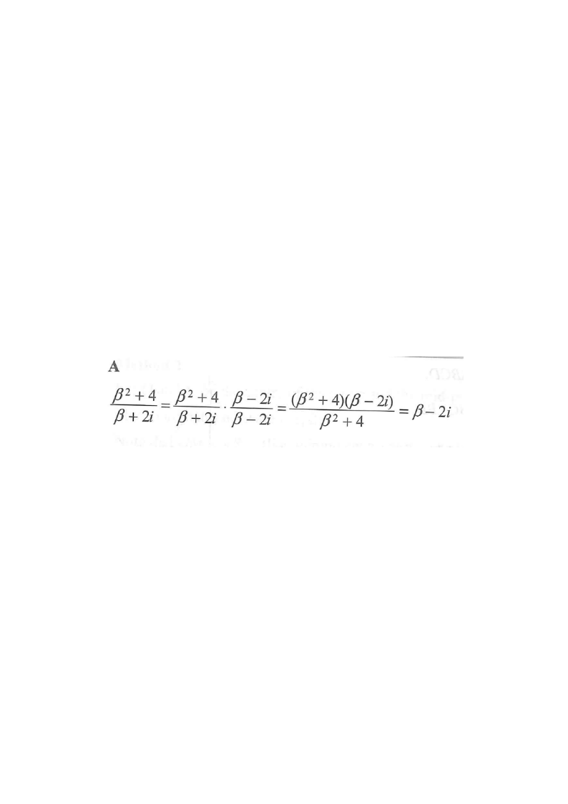

Step 1 — recognise the given complex number.
If \(\beta\) is a real number, then the conjugate of \(\beta-2i\) is

The question gives the complex number \[ z=\beta-2i \] where \(\beta\) is real. So the real part is \(\beta\) and the imaginary part is \(-2\).
Split the number into Re(z) and Im(z) first.
For any complex number \(z=a+bi\) (with \(a,b\) real), the conjugate is \[ \overline{z}=a-bi. \] The real part stays the same, and the sign of the imaginary part flips.
The conjugate only changes the sign in front of \(i\).
Here \(a=\beta\) and \(b=-2\). Substituting, \[ \overline{\beta-2i}=\beta-(-2)i=\beta+2i. \]
Careful: subtracting a negative imaginary part makes it positive.
\[ \overline{\beta-2i}=\beta+2i \] matches option A. Options B and C change the real part to \(-\beta\), which is wrong since the real part must stay the same. Option D swaps the real and imaginary parts — not a conjugate.
Only the sign of the imaginary part changes.
Question. If \(\gamma\) is a real number, then the conjugate of \(-3+\gamma i\) is
A. \(-3+\gamma i\) B. \(-3-\gamma i\) C. \(3-\gamma i\) D. \(3+\gamma i\)